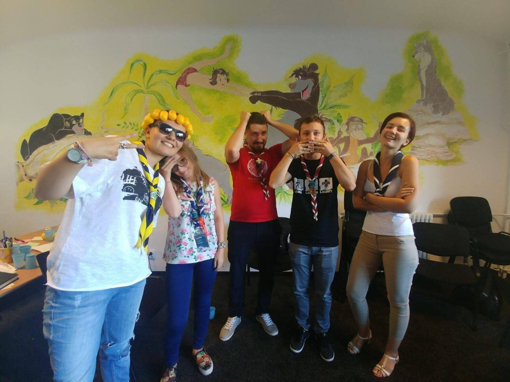

AG EXTRAordinară 2017

În data de 16 septembrie a avut loc Adunarea Generală Extraordinară a Centrului Local cu ocazia finalului mandatului Consiliului CL.
Am beneficiat din nou de amabilitatea C.L. Sf. Nicolae care ne-a pus la dispoziție propriul sediu, unde am desfășurat pentru a 4 a oară AG, din cele 5 câte au avut loc până acum în istoria Cabanei. Așa că, iată-ne în sală la ora 10 în așteptarea tuturor participanților. În orele ce au urmat am discutat despre punctele de pe ordinea de zi, precum raportul de activitate, implementarea unei noi strategii de dezvoltare sau regulament. În urma alegerilor șeful de centru a rămas Adi, căruia i s-au alăturat în consiliu Ada, Maria, Madalina și Petre.
Acest CCL are misiunea de a pregăti până în primăvară următoarea strategie de dezvoltare.
Sperăm ca noua echipă să asigure evoluția CL și să își ducă cu succes mandatul până la capăt.